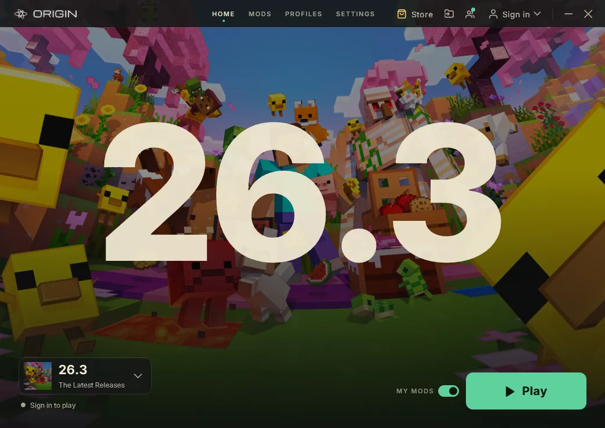
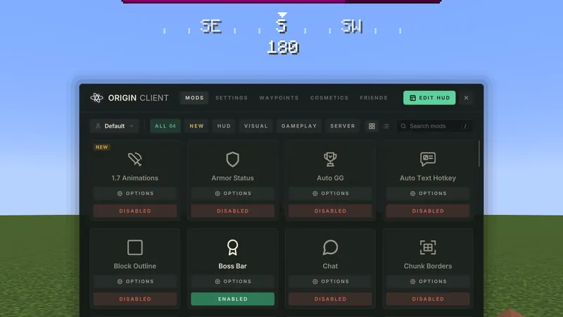
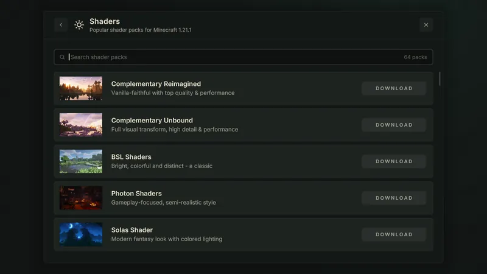
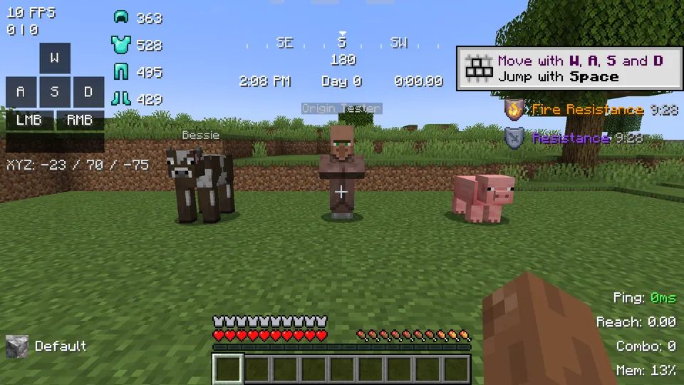
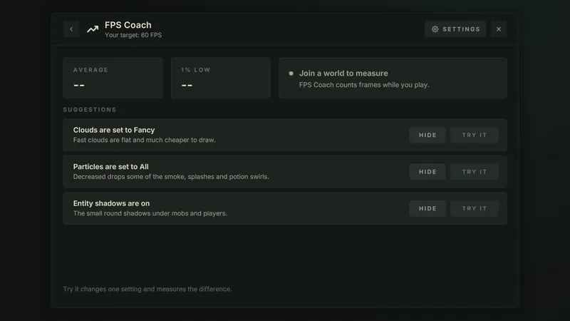

Pick a version. Press Play.
Origin is a free Minecraft: Java Edition launcher and in-game client. Choose one of 26 versions and it sets up the mods, shaders and menus for it.
Free · Windows 10 & 11 · also for Mac (Beta) and Linux
You choose the version. Origin does the setup.
Press Play and the launcher installs what that version needs: the right loader, Sodium and Iris for shaders, and Origin's own menus, HUD and mods. Then it keeps all of it up to date.

- Several accounts at once. One game window each, side by side.
- Your own mods stay. Drop them in next to Origin's. If one does the same job, Origin's steps aside.
- Settings travel. Keybinds, mod settings and servers come with you between versions.
From 1.8.9 to 26.3.
26 versions, each its own build made for that version's code, with the same Origin look on all of them.
Inside the game.
What you see once you press Play. These are real screens from Origin on 1.21.1.
-
The title screen
Origin's own title and loading screens, with Minecraft's dark buttons and font.
-

One mod menu
Every built-in mod in one place. Turn each on or off and set it up, without leaving the world.
-

Shaders, built in
Iris and Sodium come installed. Pick a shader pack from the list and it downloads right there.
-

A HUD you arrange
FPS, coordinates, armour, keystrokes, compass and more. Drag each one where you want it.
-

FPS Coach
It measures your frames, names the settings that cost the most, and tries a change for you.
Download Origin.
Free for Windows 10 and 11, Linux, and Mac as a beta. Origin keeps itself up to date.
Download for WindowsOther downloads
Opening it on a Mac for the first time
The Mac version is new, so macOS doesn't know it yet and asks once before it opens.
- Open the download and drag Origin into Applications.
- Open Origin from Applications. macOS says it can't check it: click Done.
- Open System Settings, then Privacy & Security, scroll down and click Open Anyway next to Origin.
- Click Open Anyway again and type your Mac password. From then on it opens like any other app.
Older Minecraft versions (1.8.9 to 1.18.2) run through Rosetta on Apple Silicon. Origin offers to install it the first time you need it.
- Free
- Windows 10 & 11
- Mac Beta (macOS 15+)
- Linux (64-bit)
- Updates itself